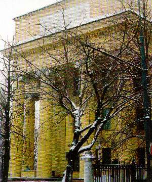
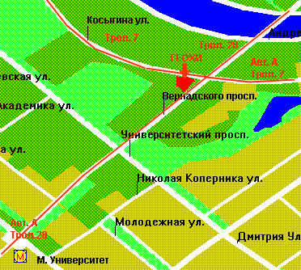

Applied
Chemometrics, Analytical Chemistry, and Sampling Research Group (ACABS) |
ТЕОРИЯ ПРОБООТБОРА
ОСНОВНЫЕ ПОЛОЖЕНИЯ И ПРАКТИКА ПРИМЕНЕНИЯ В
ГЕОЛОГИИ, ГЕОХИМИИ, ПРИ ИЗУЧЕНИИ ОБЪЕКТОВ
ОКРУЖАЮЩЕЙ СРЕДЫ
| Лекторы: | Speakers: |
| Профессор Ким Эсбенсен
аспирант Ларс Петерсен ACABS, Ольборг университет,Эсбьерг, Дания |
Prof. Kim H. Esbensen
PhD student Lars Peterson ACABS, Aalborg University, Esbjerg, Denmark |
|
Программа |
Program |
|
26 апреля |
April 26th |
|
|
|
27 апреля |
April 27th |
|
|
| Обсуждение проблем пробоотбора
за круглым столом. Современная практика геологического (геохимического, эколого-геохимического и пр.) пробоотбора. Дополнительные возможности применения ТП |
Round-table discussion Present geological/geochemical/environmental sampling practice(s) & TOS' added possibilitie |
Место и время проведения
Семинар будет проходить
в
Институте Геохимии и Аналитической Химии им. В.И.
Вернадского Российской Академии Наук.
Адрес института: Москва, 117975, ул.Косыгина, 19.
Справки и заявки на участие в семинаре по тел.: 137-24 - 84. (Коробова Елена Михайловна, ученый секретарь).

Проезд:
до ст. метро "Воробьевы горы", выход на ул. Косыгина к Городскому центру творчества молодежи (бывш. Дворцу пионеров),
от ст. метро "Октябрьская" или "Ленинский проспект" троллейбусом № 7,
от ст. метро "Университет" автобусом "А" до ост. "Городской центр творчества молодежи".
Важно:
Для входа в Институт необходимо иметь при
себе паспорт.
Последняя модификация: 09.04.04 .